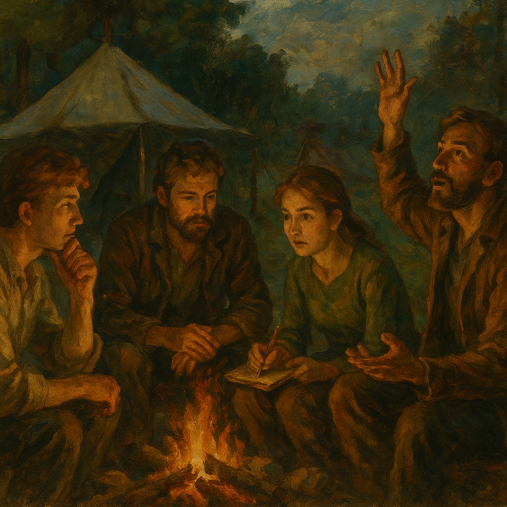

Frequently Asked Questions
Welcome to our FAQ section, designed to
address common doubts and provide clear,
concise answers about The Network and
the principles of voluntaryism and
agorism. Each answer offers a brief
explanation and a link to a dedicated
page for more in-depth exploration.
Core Concepts & Practicality
▶
Has anarchy ever worked?
Yes. History is rich with examples
of stateless societies, from ancient
tribes to medieval Icelandic
commonwealths, that functioned
effectively without centralized
governments. These examples
demonstrate that organized, peaceful
coexistence is possible through
voluntary association.
Learn More: Explore
historical and modern precedents on
Anarchy Examples: Historical
Precedents of Stateless Society
in The Library.
▶
Do we have an actionable solution?
Absolutely. We don't offer mere
theory; our network is built on a
comprehensive, actionable plan
designed to create real-world
freedom and robust communities
today. This involves tangible
strategies for economic
independence, security, and societal
well-being.
Learn More:
Discover the full strategy on
A Plan That Cannot Fail
in The Compass Star, and delve into
specific voluntary alternatives to
government services on
Beyond State Solutions:
Voluntary Alternatives to
Societal Problems
in The Library.
▶
How can any of this apply to me?
Your path to freedom is unique, but
our network provides diverse entry
points and resources tailored to
individual passions, skills, and
goals. Whether you seek financial
autonomy, a supportive community,
personal growth, or a new purpose,
you can find your way here.
Learn More: Explore
various pathways to align with your
personal vision on
Choose Your Path
in Camp Orientation, and gain
insights into thriving in a
freedom-oriented lifestyle on
How to Flourish in Your New
Life
in The Compass Star.
▶
Is this a utopia?
We do not propose a perfect utopia.
Instead, we offer a practical and
achievable path to significantly
more freedom, prosperity, and peace
by leveraging voluntary principles
and decentralized, market-driven
solutions. Our focus is on building
real alternatives that address
current problems effectively.
Learn More:
Understand the practical
implementation of our vision on
A Plan That Cannot Fail
in The Compass Star.
▶
How is this different from other
intentional communities?
While we foster strong community
bonds, The Network is not just a
static, isolated intentional
community. We are a dynamic,
interconnected ecosystem focused on
building practical, replicable
solutions and active pathways to
freedom, including innovative
nomadic models like Caravanarchy.
Our aim is to spread freedom, not
just contain it.
Learn More: Explore
our unique approach to mobile
community building on the
Caravanarchy
page in The Workshop.
Addressing Public Services &
Security
▶
What about the lack of public
services like roads, education, or
healthcare?
In a voluntary society, essential
services are provided by
decentralized, market-driven
solutions or through
community-driven initiatives, rather
than through coercive taxation. This
direct accountability to users
fosters innovation, efficiency, and
higher quality, as service providers
must respond to customer demand to
thrive.
Learn More: See
examples of voluntary alternatives
to traditional government services
on
Beyond State Solutions:
Voluntary Alternatives to
Societal Problems
in The Library.
▶
How do we ensure safety from local
threats without police?
Safety and security are paramount.
In a voluntary system, protection is
handled by private security agencies
directly accountable to their
customers, alongside community watch
initiatives, neighborhood defense
organizations, and individual
self-reliance. This competition
drives responsiveness and
effectiveness.
Learn More:
Discover more about how voluntary
systems address security on
Beyond State Solutions:
Voluntary Alternatives to
Societal Problems
in The Library.
▶
How do we handle national security
without a government?
True national security emerges not
from a centralized, coercive state,
but from a resilient, decentralized
network of self-reliant communities,
strong voluntary alliances, and
advanced defensive technologies that
deter aggression. A free society's
strength lies in its decentralized
nature and the empowered
self-defense of its citizens.
Learn More:
Understand our approach to security
and defense in a stateless society
on
Beyond State Solutions:
Voluntary Alternatives to
Societal Problems
in The Library.
▶
What about taxes / funding these
services?
In a voluntary system, services are
funded directly by those who value
and use them, through subscriptions,
direct payments, or voluntary
contributions. This model ensures
providers are directly accountable
to their customers, fostering
efficiency, innovation, and ethical
operation far beyond coercive
taxation systems.
Learn More: Explore
how the parallel economy and
voluntary funding models work on
Why Agorism Works
in The Library, and see practical
applications on
Beyond State Solutions:
Voluntary Alternatives to
Societal Problems.
Next Page: Camp Orientation
→